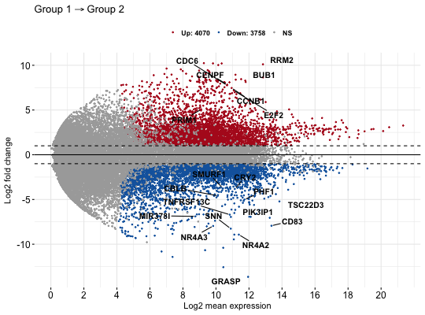
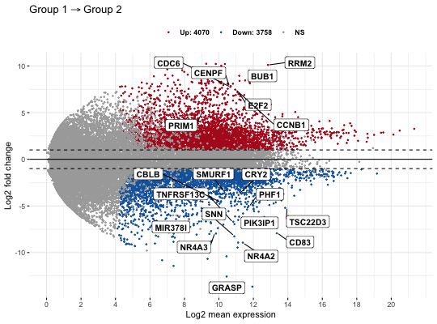

Make MA-plot which is a scatter plot of log2 fold changes (on
the y-axis) versus the mean expression signal (on the x-axis).
ggmaplot(data, fdr = 0.05, fc = 1.5, genenames = NULL,
detection_call = NULL, size = NULL, font.label = c(12, "plain",
"black"), label.rectangle = FALSE, palette = c("#B31B21", "#1465AC",
"darkgray"), top = 15, select.top.method = c("padj", "fc"), main = NULL,
xlab = "Log2 mean expression", ylab = "Log2 fold change",
ggtheme = theme_classic(), ...)
Arguments
- data
- an object of class DESeqResults, get_diff, DE_Results, matrix or
data frame containing the columns baseMean, log2FoldChange, and padj. Rows
are genes.
- baseMean: the mean expression of genes in the
two groups.
- log2FoldChange: the log2 fold changes of group 2 compared
to group 1
- padj: the adjusted p-value of the used statiscal test.
- fdr
- Accepted false discovery rate for considering genes as
differentially expressed.
- fc
- the fold change threshold. Only genes with a fold change >= fc and
padj <= fdr are considered as significantly differentially expressed.
- genenames
- a character vector of length nrow(data) specifying gene
names corresponding to each row. Used for point labels.
- detection_call
- a numeric vector with length = nrow(data), specifying
if the genes is expressed (value = 1) or not (value = 0). For example
detection_call = c(1, 1, 0, 1, 0, 1). Default is NULL. If detection_call
column is available in data, it will be used.
- size
- points size.
- font.label
- a vector of length 3 indicating respectively the size
(e.g.: 14), the style (e.g.: "plain", "bold", "italic", "bold.italic") and
the color (e.g.: "red") of point labels. For example font.label =
c(14, "bold", "red").
- label.rectangle
- logical value. If TRUE, add rectangle underneath the
text, making it easier to read.
- palette
- the color palette to be used for coloring or filling by groups.
Allowed values include "grey" for grey color palettes; brewer palettes e.g.
"RdBu", "Blues", ...; or custom color palette e.g. c("blue", "red"); and
scientific journal palettes from ggsci R package, e.g.: "npg", "aaas",
"lancet", "jco", "ucscgb", "uchicago", "simpsons" and "rickandmorty".
- top
- the number of top genes to be shown on the plot. Use top = 0 to hide to gene labels.
- select.top.method
- methods to be used for selecting top genes. Allowed
values include "padj" and "fc" for selecting by adjusted p values or fold
changes, respectively.
- main
- plot main title.
- xlab
- character vector specifying x axis labels. Use xlab = FALSE to
hide xlab.
- ylab
- character vector specifying y axis labels. Use ylab = FALSE to
hide ylab.
- ggtheme
- function, ggplot2 theme name. Default value is theme_pubr().
Allowed values include ggplot2 official themes: theme_gray(), theme_bw(),
theme_minimal(), theme_classic(), theme_void(), ....
- ...
- other arguments to be passed to
ggpar.
Value
returns a ggplot.
Examples
data(diff_express)
# Default plot
ggmaplot(diff_express, main = expression("Group 1" %->% "Group 2"),
fdr = 0.05, fc = 2, size = 0.4,
palette = c("#B31B21", "#1465AC", "darkgray"),
genenames = as.vector(diff_express$name),
legend = "top", top = 20,
font.label = c("bold", 11),
font.legend = "bold",
font.main = "bold",
ggtheme = ggplot2::theme_minimal())

# Add rectangle around labels
ggmaplot(diff_express, main = expression("Group 1" %->% "Group 2"),
fdr = 0.05, fc = 2, size = 0.4,
palette = c("#B31B21", "#1465AC", "darkgray"),
genenames = as.vector(diff_express$name),
legend = "top", top = 20,
font.label = c("bold", 11), label.rectangle = TRUE,
font.legend = "bold",
font.main = "bold",
ggtheme = ggplot2::theme_minimal())
